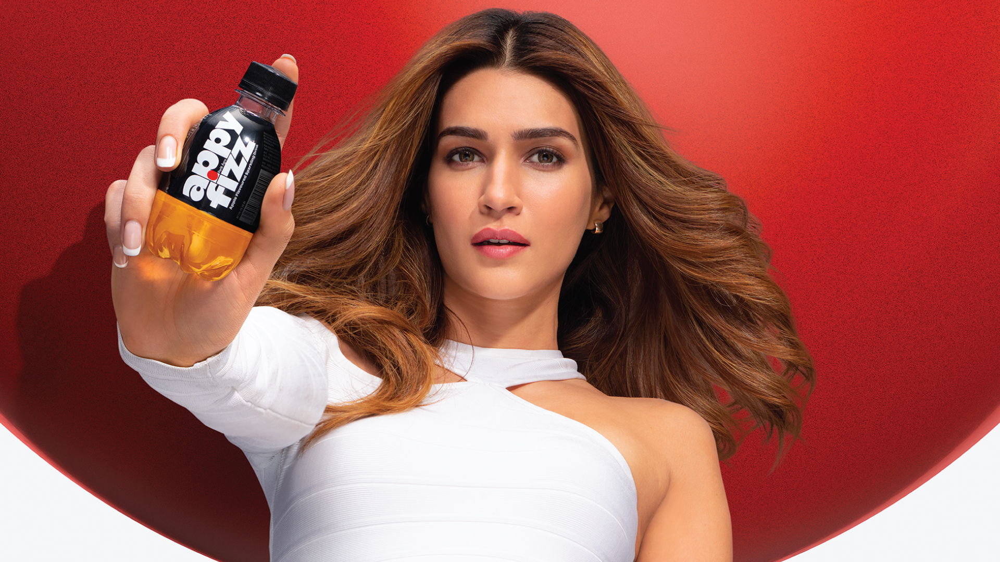

New Appy
Fizz
Home
Company
Brands
Busines
News Room
Sustainability
Careers
Contact Us


Launched in 2005, Appy Fizz was India’s first
sparkling apple juice. Its unique packaging and
taste made it feel like the champagne of fruit
drinks. Today, Appy Fizz is one of the largest
beverage brands in India. It has a crisp apple
flavour that is balanced with just the right
amount of fizz, giving you a cool drink that can
transport you to the realm of a refreshing
experience.
Its bold & fashionable design emphasizes its
strong confident personality that reflects the
modern expressive & ambitious Indian youth of
today
The Appy Fizz experience can be enjoyed in
multiple ways. It is available in PET bottles of
125ml, 175ml, 250ml, 600ml, 1ltr and 1.5ltr &
250ml cans


Corporate Head Office
Parle Agro pvt. Ltd.,
off Western Express Highway
Sahar-Chakal Road, Parsiwada,
Andheri (E), Mumbai 400 099.
2019, Parle Agro All rights reserved.
Our Policy: Vigil Mechanism Policy
Annual Return
Get in touch:
T: 002-67348000
E:info@parleagro.com
follow us:Instagram, twitter and Linkedin